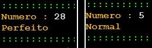

| Exercício | Dificuldade | Pontos | Data limite | Créditos |
| Ficha05_030
|
Challenger |
6.0 |
26/09/2022 16:02:00 |
(c)M@nso 2021 |
Número perfeito
Um número perfeito é aquele que a soma dos seus divisores é igual a ele próprio
6 = 1 + 2 + 3 (perfeito)
28 = 1 + 2 + 4 + 7 + 14 (perfeito)
Construa um algoritmo que solicite a introdução de um número e de seguida diga se ele é "Perfeito" ou normal.

| Input |
Output |
| 28 |
Número : 28
Perfeito |
| 6 |
Número : 6
Perfeito |
| 5 |
Número : 5
Normal |
| 14 |
Número : 14
Normal |
| 33 |
Número : 33
Normal |
| 38 |
Número : 38
Normal |
| 40 |
Número : 40
Normal |
| 19 |
Número : 19
Normal |
| 47 |
Número : 47
Normal |
| 36 |
Número : 36
Normal |
Algorithmi 22.05 Student version
(c) Antonio M@nso 2022
Instituto Politécnico de Tomar - All rights reserved